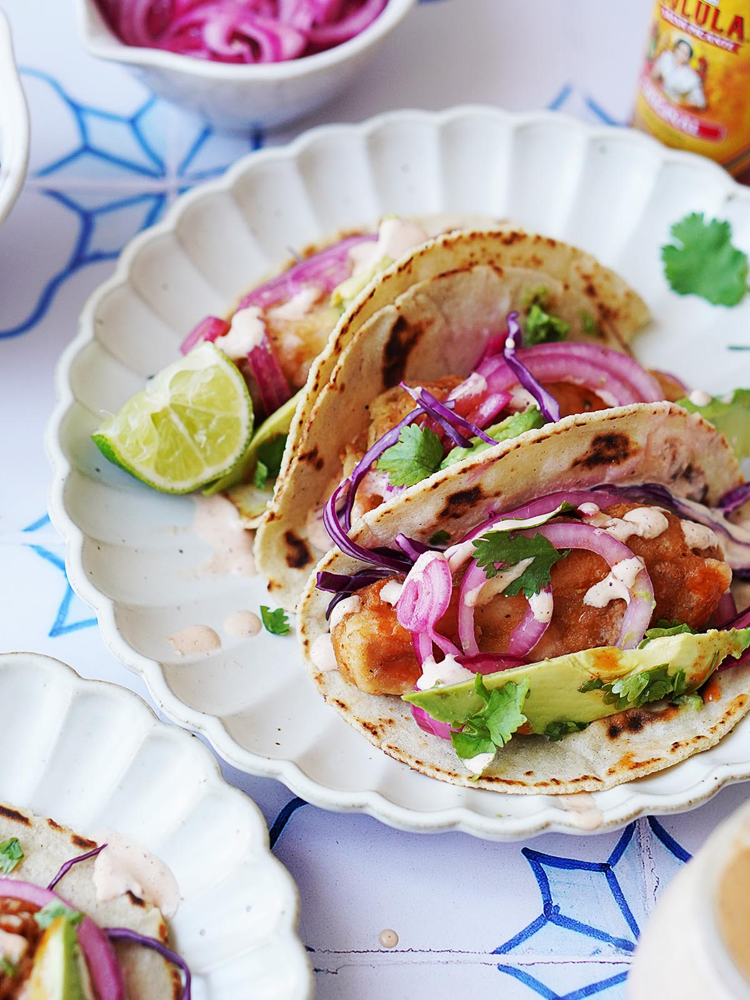

Fish Tacos

So much depends on a plate of fish tacos, drizzled with lime, garnished with cilantro
Description
Fish tacos, anyone? Fresh flavors, clean protein, guilt-free delicousness.
The perfect hassle free dinner plan that the whole family can enjoy.
Ingredients
- 1 lbs Fresh fish
- 2 Tbsp Olive Oil
- 1 tsp cumin
- 1 tsp paprika
- Juice of 1 lime
- 1 avacodo
- 1/2 white onion, diced
- Your favorite hot sauce
- freshly chopped cilantro
- 9 corn tortillas